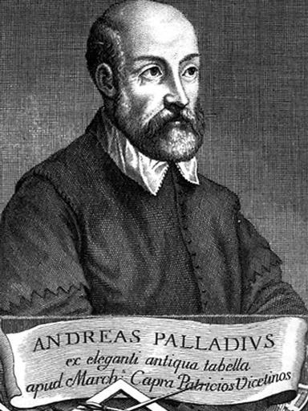
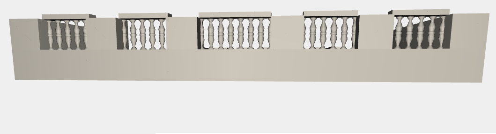
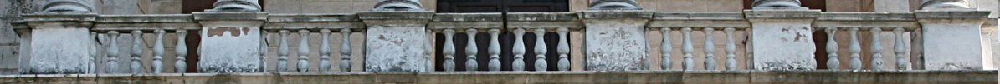
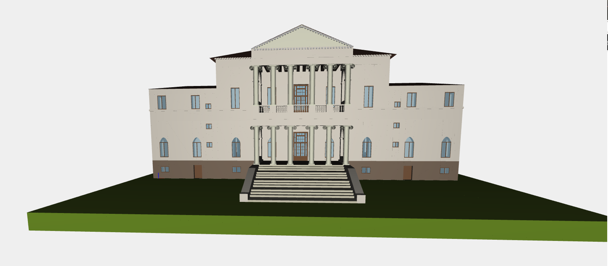
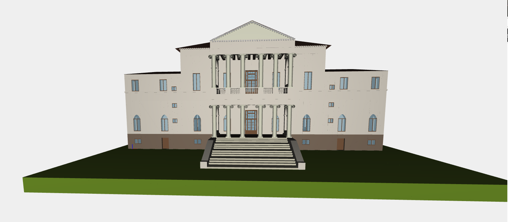
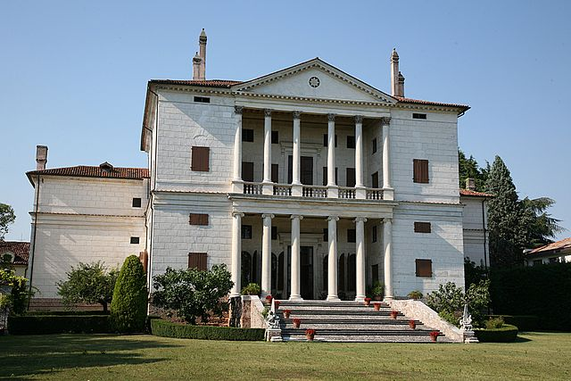

A Little Bit of History
|  |
This is some text!
Villa Cornaro is a patrician villa in Piombino Dese, about 30 km northwest of Venice, Italy. It was designed by the Italian Renaissance architect Andrea Palladio in 1552 and is illustrated and described by him in Book Two of his 1570 masterwork, I Quattro Libri dell'Architettura [The Four Books on Architecture].
|
Architectural Details
Villa Cornaro was substantially constructed in 1553-1554, with additional work into the 1590s, for Giorgio Cornaro, younger son of a wealthy Venetian family. It represents one of the most remarkable examples of a Renaissance villa. The north façade (illustrated) has an innovative projecting central portico-loggia that is a flexible living space out of the sun and open to cooling breezes. The interior space is a harmonious arrangement of the strictly symmetrical floor plans on which Palladio insisted without exception. Rooms of inter-related proportions composed of squares and rectangles flank a central axial vista which extends through the house. As Rudolph Wittkower noted, by moving subsidiary staircases into the projecting wings and filling matching corner spaces with paired oval principal stairs, space was left for a central salone which is fully as wide as the porticos (plan, left). The central core of the villa forms a rectangle in which there are six repetitions of an elegant standard module. The interior has 18th century frescos by Mattia Bortoloni and stuccos by Camillo Mariani. Through its illustration in Palladio's I Quattro Libri dell'Architettura, Villa Cornaro became a model for villas all over the world, particularly in England and in colonial America. Drayton Hall (1738-1742) in Charleston, South Carolina, and Thomas Jefferson's initial version of Monticello (1768-1770) are early examples of its influence in America.
Introduction
Few documentation has been found but the aim of the project has been that of be as faithful as possible to the original villa.
In particular there's been a lack of images of the side view of the villa, infact the only one available was the Google-earth one:
So this part of walls and fixtures has been built trying to merge the style and the lines visible in the other parts of the building with the image shown.
Hierarchical Decomposition
The villa has been decomposed as follows:
MAIN STRUCTURE:
Walls, floors and ceilings
- Walls
Theese are the first objects created.
The walls respect the original ratio (as shown in the pictures);


The internal walls are omitted in order to don't burden the project
EXTERNAL:
stairs, colonnade |
- Stairs This particular flight of steps is made by similar groups of steps and a side handrail. There are two flights of steps, one on the front facade and one on the back. |
| - Colonnade Each column is composed by a doric capital on the top, a body and a base. The Ionic column is considerably more complex than the Doric or Tuscan. It usually has a base and the shaft is often fluted (it has grooves carved up its length). On the top is a capital in the characteristic shape of a scroll, called a volute, or scroll, at the four corners. The height-to-thickness ratio is around 9:1. Due to the more refined proportions and scroll capitals, the Ionic column is sometimes associated with academic buildings. |
 |
FIXTURES:
windows, doors
There are different size of windows and doors.
Little windows are placed on the low part of the villa, while big windows are mainly in the front and back facade (on the middle and the high part). Other kind of windows are distributd along the building, also with curve part on the top. For this kind of windows was necessary to create a particular curve part of glass and wall.
Each window has a boundary wood part surrounding it and a transparent glass inside, from where it can be seen inside the villa.
Regarding the doors, the frontdoors and the backdoors (on the front and the back facade) are the biggest. Other little doors are dislocated around the building.
Every fixture had to be placed in the correct part of the villa. Here it is a picture representing all the fixtures created:

BALUSTRADE
The balustrade is made by a sequence of balausters. The number of balausters and the distance between them respects the original.
 Final Result: FACADES
Here are the comparison beteeen the front and the back facade of the villa, with the original pictures.
Front Facade.
 

Back Facade.
